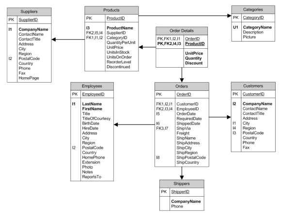
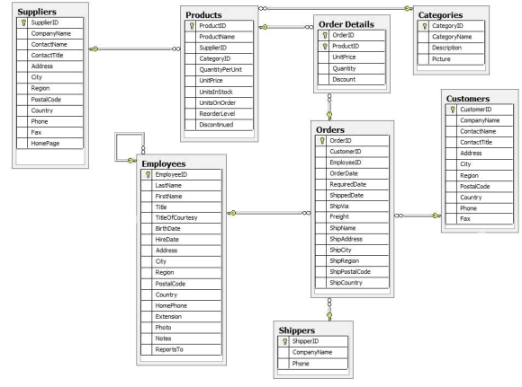

Para conocer más acerca de los sistemas gestores de bases de datos, podemos visitar la siguiente página. Más
Otro enlace que pueden ser de interés sobre sistemas gestores de bases de datos, podemos visitar la siguiente página. Más
Otros más con diferentes sistema gestores de base de datos, podemos visitar la siguiente página. Más
En el modelo relacional las dos capas de diseño conceptual y lógico, se parecen mucho. Generalmente se implementan mediante diagramas de Entidad/Relación (modelo conceptual) y tablas y relaciones entre éstas (modelo lógico). Este es el modelo utilizado por los sistemas gestores de datos más habituales (SQL Server, Oracle, MySQL...).
Nota: Aunque mucha gente no lo sabe, a las bases de datos relaciones se les denomina así porque almacenan los datos en forma de “Relaciones” o listas de datos, es decir, en lo que llamamos habitualmente “Tablas”. Muchas personas se piensan que el nombre viene porque además las tablas se relacionan entre sí utilizando claves externas. No es así, y es un concepto que debemos tener claro. (Tabla = Relación). El modelo relacional de bases de datos se rige por algunas normas sencillas: Todos los datos se representan en forma de tablas (también llamadas “relaciones”, ver nota anterior). Incluso los resultados de consultar otras tablas. La tabla es además la unidad de almacenamiento principal. Las tablas están compuestas por filas (o registros) y columnas (o campos) que almacenan cada uno de los registros (la información sobre una entidad concreta, considerados una unidad). Las filas y las columnas, en principio, carecen de orden a la hora de ser almacenadas. Aunque en la implementación del diseño físico de cada SGBD esto no suele ser así. Por ejemplo, en SQL Server si añadimos una clave de tipo "Clustered" a una tabla haremos que los datos se ordenen físicamente por el campo correspondiente. El orden de las columnas lo determina cada consulta (que se realizan usando SQL). Cada tabla debe poseer una clave primaria, esto es, un identificador único de cada registro compuesto por una o más columnas. Para establecer una relación entre dos tablas es necesario incluir, en forma de columna, en una de ellas la clave primaria de la otra. A esta columna se le llama clave externa. Ambos conceptos de clave son extremadamente importantes en el diseño de bases de datos. Basándose en estos principios se diseñan las diferentes bases de datos relacionales, definiendo un diseño conceptual y un diseño lógico, que luego se implementa en el diseño físico usando para ello el gestor de bases de datos de nuestra elección (por ejemplo SQL Server). Esta base de datos representa un sistema sencillo de gestión de pedidos para una empresa ficticia. Existen conceptos que hay que manejar como: proveedores, empleados, clientes, empresas de transporte, regiones geográficas, y por supuesto pedidos y productos.El diseño conceptual de la base de datos para manejar toda esta información se puede ver en la siguiente figura, denominada diagrama Entidad/Relación o simplemente diagrama E-R:
Como vemos existen tablas para representar cada una de estas entidades del mundo real: Proveedores (Suppliers), Productos, Categorías de productos, Empleados, Clientes, Transportistas (Shippers), y Pedidos (Orders) con sus correspondientes líneas de detalle (Order Details). Además están relacionadas entre ellas de modo que, por ejemplo, un producto pertenece a una determinada categoría (se relacionan por el campo CategoryID) y un proveedor (SupplierID), y lo mismo con las demás tablas. Cada tabla posee una serie de campos que representan valores que queremos almacenar para cada entidad. Por ejemplo, un producto posee los siguientes atributos que se traducen en los campos correspondientes para almacenar su información: Nombre (ProductName), Proveedor (SupplierID, que identifica al proveedor), Categoría a la que pertenece (CategoryID), Cantidad de producto por cada unidad a la venta (QuantityPerUnit), Precio unitario (UnitPrice), Unidades que quedan en stock (UnitsInStock), Unidades de ese producto que están actualmente en pedidos (UnitsOnOrder), qué cantidad debe haber para que se vuelva a solicitar más producto al proveedor (ReorderLevel) y si está descatalogado o no (Discontinued). Los campos marcados con "PK" indican aquellos que son claves primarias, es decir, que identifican de manera única a cada entidad. Por ejemplo, ProductID es el identificador único del producto, que será por regla general un número entero que se va incrementando cada vez que introducimos un nuevo producto (1, 2, 3, etc..). Los campos marcados como "FK" son claves foráneas o claves externas. Indican campos que van a almacenar claves primarias de otras tablas de modo que se puedan relacionar con la tabla actual. Por ejemplo, en la tabla de productos el campo CategoryID está marcado como "FK" porque en él se guardará el identificador único de la categoría asociada al producto actual. En otras palabras: ese campo almacenará el valor de la clave primaria (PK) de la tabla de categorías que identifica a la categoría en la que está ese producto. Los campos marcados con indicadores que empiezan por "I" (ej: "I1") se refieren a índices. Los índices generan información adicional para facilitar la localización más rápida de registros basándose en esos campos. Por ejemplo, en la tabla de empleados (Employees) existe un índice "I1" del que forman parte los campos Nombre y Apellidos (en negrita además porque serán también valores únicos) y que indica que se va a facilitar la locación de los clientes mediante esos datos. También tiene otro índice "I2" en el campo del código postal para localizar más rápidamente a todos los clientes de una determinada zona. Los campos marcados con indicadores que empiezan con "U" (por ejemplo U1) se refieren a campo que deben ser únicos. Por ejemplo, en la tabla de categorías el nombre de ésta (CategoryName) debe ser único, es decir, no puede haber -lógicamente- dos categorías con el mismo nombre.
Una vez tenemos claro el modelo E-R debemos traducirlo a un modelo lógico directamente en el propio sistema gestor de bases de datos (Oracle, MySQL, SQL Server...). Si hemos utilizado alguna herramienta profesional para crear el diagrama E-R, seguramente podremos generar automáticamente las instrucciones necesarias para crear la base de datos. La mayoría de los generadores de diagramas E-R (por ejemplo Microsoft Visio) ofrecen la capacidad de exportar el modelo directamente a los SGBD más populares. Entonces, todo este modelo conceptual se traduce en un modelo lógico que trasladaremos a la base de datos concreta que estemos utilizando y que generalmente será muy parecido. Por ejemplo, este es el mismo modelo anterior, mostrado ya como tablas en un diagrama de SQL Server:
En este caso hemos creado cada tabla, una a una, siguiendo lo identificado en el diagrama E-R y estableciendo índices y demás elementos según las indicaciones de cada uno de los campos. Además hemos decidido el mejor tipo de datos que podemos aplicar a cada campo (texto, números, fechas... que se almacenan para cada registro). Su representación gráfica en la base de datos es muy similar, sin embargo el modelo físico (cómo se almacena esto físicamente), puede variar mucho de un SGBD a otro y según la configuración que le demos.
CampusMVP.es. Recuperado de https://www.campusmvp.es/recursos/post/Disenando-una-base-de-datos-en-el-modelo-relacional.aspx


{kind=link}
{kind=link}